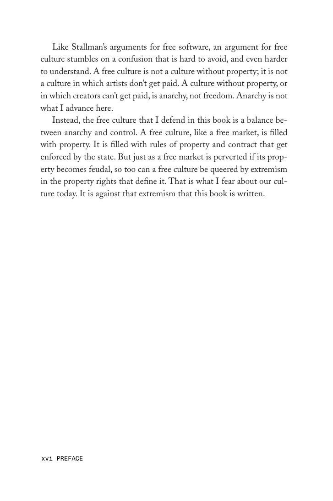

Give your agent a PDF tool, not a PDF.
nupdf is a PDF engine for AI agents, in Rust. One binary reads, searches, renders, edits and redacts PDFs, and answers every command in JSON a model can act on.
See what it copies
Use nupdf for PDF work. Install it with `cargo install --locked nupdf-cli`. Run `nupdf guide` once to learn every command, or add it as an MCP server with `claude mcp add nupdf -- nupdf mcp`. Start with `nupdf info FILE`. Prefer `nupdf search` and `nupdf extract --max-chars` over reading whole files, and cite the ids it returns. More: https://nupdf.dev/llms.txt

Every span of text has an address. A search hit returns it; any other command accepts it.
{
"page": 15,
"id": "p15.b1.l3.s1:17-29",
"text": "free culture"
}Up and running in a minute.
One install. Use it from a shell, hand it to an agent, or link it as a library.
$ cargo install --locked nupdf-cli $ nupdf info report.pdf # triage: pages, text layer, scans, forms, what to run next $ nupdf extract report.pdf --format markdown # the text, as Markdown $ nupdf search contract.pdf "terminat" --options ignore-case $ nupdf redact statement.pdf -o clean.pdf --preset email --preset phone $ nupdf verify clean.pdf --preset email --preset phone
$ cargo install --locked nupdf-cli
$ claude mcp add nupdf -- nupdf mcp # one tool per command, each taking one file or many
$ cargo install --locked nupdf-cli $ mkdir -p ~/.claude/skills/nupdf $ nupdf guide --skill > ~/.claude/skills/nupdf/SKILL.md
# Cargo.toml [dependencies] nupdf = "0.1" // main.rs let doc = nupdf::Document::open(std::fs::read("report.pdf")?)?;
One binary. Read, change, prove.
Every command prints one versioned JSON report and exits with a code that says what happened.
Read
Text with an address for every span, within a budget, with a cursor to continue.
infoextractsearchtablesrenderocrformsannotssignaturesoutlinelinksattachmentsfontsimagesChange
Inputs are never modified. Every written file is read back before it is kept.
mergesplitpagesmetaformscleanflattensanitizeencryptdecryptbatchProve
Redaction that searches its own output, and a way to check any file or compare two.
redactverifydiffschemaguidemcpMeasured with agents, not adjectives.
Thirty graded tasks, five runs each, one small-model agent a run, each allowed its own tool only: 1,045 runs. The graders use pdftotext, qpdf and MuPDF, never nupdf.
Tokens and wall time are medians over passed runs. Tools that cannot write a PDF skip the tasks that need one. Over the CLI, nupdf used slightly more tokens than the two Python arms. Tasks, graders and every run
Quick, and checked.
Each tool is asked for the text of every page, as an agent would ask: a new process for each call, start-up included. Measured on one Apple silicon Mac, an M5 Max.
One call the median over 200 test files; shorter is faster
A long document pages a second over 17 documents of about 100 pages; longer is faster
nupdf is not the best on every column: MuPDF's own tool uses the least memory in both tables, and on 8 of the 30 long documents pdftotext was quicker. "Right text" counts the files where a tool's words match PDFium's, out of those where MuPDF and PDFium agree. Times are over the files every tool completed. The files come from the pdf.js, PDFium, qpdf and veraPDF public test suites. nupdf 0.1.0, MuPDF 1.28.6 and PDF Oxide 0.3.78, run on 14 November 2026. Method and every other benchmark
unsafe; the workspace forbids itnupdf builds on MuPDF's work. It carries MuPDF's algorithms into safe Rust, credits Artifex in every derived file, and is checked against MuPDF file by file. All results